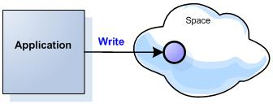
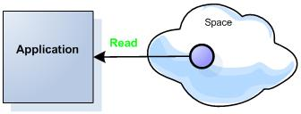
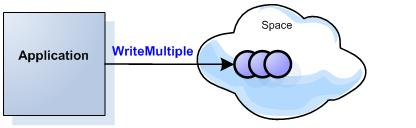
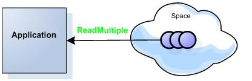
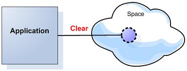
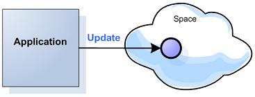

Section Summary: GigaSpaces JavaSpaces API Plain Old Java Object support - the POJO.
Overview
GigaSpaces JavaSpaces POJO support allows you to use JavaBean classes as space domain classes, and perform space operations using these objects. POJO domain Classes should follow rules similar to the ones defined by JPA, Hibernate and other domain class frameworks.
POJOs as Data Objects
As mentioned earlier, one of the differences between the GigaSpace interface and the classic net.jini.Space.JavaSpace interface, is its support for POJOs as Space entries. The JavaSpace interface is rather intrusive and forces objects that are written to the Space to implement the net.jini.core.entry.Entry interface, and mark any field to be stored on the Space as public.
The GigaSpace interface fully supports POJOs, and is much less intrusive than the original JavaSpace interface. Although {{Entry}}s are still supported, this is discouraged, and you should only use POJOs as a Space data object.
In terms of preconditions, your POJO classes need to follow the JavaBeans conventions, i.e. have a no-argument constructor, and declare a getter and setter to every field you want saved on the Space. Also, they cannot implement the net.jini.core.entry.Entry interface (there shouldn't be any reason to do that anyway, since it is an empty tagging interface). The POJO class does not have to implement java.io.Serializable, but its properties must. The reason for this, is that the POJOs fields are extracted when written to the Space, and stored in a special tuple format that enables the Space to index and analyze them more easily. Therefore the actual POJO is not sent over the network, but rather its properties.
You can override the default serialization behaviour of your POJO by implementing the java.io.Externalizable interface.
Providing Metadata to the Space about the POJO Class
When writing POJOs to the Space, you can provide some metadata about the POJO's class to the space, using Java 5 annotations, or an XML configuration. This overview uses annotation to provide metadata. For a complete reference to POJO annotations and XML configuration, refer to this page.
Here is an overview of the most commonly used POJO annotations:
- @SpaceClass: Class level annotation - not mandatory. Used to mark a class that is written to the space (by default if you write a class to the space, it is marked as such automatically). Use this when you would like to provide additional metadata at the class level, such as whether or not this class is persisted to a database if Persistency is configured on the Space.
- @SpaceId: The identifier property of the POJO. This property uniquely identifies the POJO within the space, and is similar to a primary key in a database. You can choose between an application-generated ID (autoGenarate=false), and an automatically-generated ID (autoGenerate=true).
- @SpaceProperty: Defines various attributes related to a POJO property - the null value if you are using a primitive property (e.g. nullValue=-1), and whether they should be indexed for faster querying (index=BASIC).
- @SpaceVersion: The version property of the POJO - optional. Defines a property to be used to indicate the version of the instance (used to implement optimistic locking).
- @SpaceRouting: The routing property for the POJO. In a partitioned space, this controls how instances of a certain class are distributed across the partitions. When two instances (even of different classes), have the same value for their routing property, they end up in the same partition.
| Primitives or Wrapper Classes for POJO Properties? GigaSpaces supports both primitives (int, long, double, float, etc.), and primitive wrappers (java.lang.Integer, java.lang.Double, etc.). In general, it is recommended that you use the primitive wrapper. This enables you to use the null values as a wildcard when using template matching (see below).
|
Here is a sample POJO class:
@SpaceClass public class Person { private Integer id; private String name; private String lastName; private Integer age; ... public Person() {} @SpaceId(autoGenerate=false) @SpaceRouting public Integer getId() { return id;} public void setId(Integer id) { this.id = id; } @SpaceProperty(index=BASIC) public Long getLastName() { return lastName; } public void setLastName(String type) { this.lastName = lastName; } ... }
GigaSpaces POJO rules:
- Do not implement the net.jini.core.entry interface.
- Follow the JavaBeans specification.
- Have private fields.
- Avoid using numeric primitives (long , int) as the POJO fields. Use their relevant Object wrapper instead (Long , Integer). This will avoid the need to specify a null-value and simplify query construction when using the SQLQuery.
- Have getter and setter methods for every field you would like to be stored within the space object.
- Include space class metadata decorations (indexed fields, affinity-keys, persisted mode, etc.).

You can define space classes metadata by class and field level decorations. These can be defined via annotations or XML configurations files (*gs.xml file).
This page deals with the POJO class as a space domain class, used to model the space, and store application data into the IMDG. POJO classes deployed as services into the Service Grid are described in the Data Event Listener and Space Based Remoting sections. In these cases, the POJO class is used to process incoming data, or is invoked remotely.
A POJO as a Space Domain Class
When using a POJO as a space domain class, follow these guidelines:
- A POJO class must implement a default (zero argument) constructor.
- A POJO class cannot implement the net.jini.core.entry interface; otherwise, it is treated differently.
- A POJO class should have space class metadata decorations using annotations or a gs.xml file with relevant metadata (indexed field list, version field, FIFO mode, persistency mode, primary key (i.e. id)). If neither are provided, the defaults are presumed. (The default settings might not always match your needs.)
- Getter/setter methods for fields that you want to be persisted in the space.
- Non-primitive fields must implement Serializable or Externalizable. For example, if you are using a POJO class that contains a nested class.
- When performing matching/queries using primitive fields (int , long , double, etc.) the nullValue annotation or null-value tag must be specified with relevant values, to function correctly.
@SpaceProperty(nullValue="-1") public int getEmployeeID() { return employeeID; }
- The ID can be determined using the @SpaceId annotation or the id tag.
- The ID field can be determined using the @SpaceId annotation or the id tag.
- To force GigaSpaces to ignore a POJO field when the space class being first time introduced to the space you should use one of the following:
- Use the @SpaceExclude annotation on the getter method for the fields you don't want to be included as part of the space class.
- Use the @SpaceClass(includeProperties=IncludeProperties.EXPLICIT) class level annotation and use the @SpaceProperty() with each getter method for fields you would like to be considered as part of the space class.
- When using POJOs, the write operation uses the UpdateModifiers.UPDATE_OR_WRITE mode by default. This means that when the space already includes an object with the same UID (@SpaceId(autoGenerate=false) with the same value), the POJO is updated, and a new object is not inserted.
- When using SpaceId(autoGenerate=true), the UID is stored inside the SpaceId field, causing an overhead when indexed.
- TokenQuery is not supported with POJOs.
- POJO space mapping files gs.xml files can be loaded from:
- <CLASSPATH>\config\mapping folder, or
- The same package where the class file is located using the format <<Class Name>>.gs.xml.
- A null value as template is not supported. Use new Object() instead.
- A POJO class must implement the Serializable or Externalizable interface if used as a parameter for a remote call (OpenSpaces remoting).
- When using the
org.openspaces.core.GigaSpace
interface, you can use generics when conducting space operations.
- The @Spaceid annotation or id tag must be declared when performing update operations.
- To persist a POJO object using the ExternalDataSource , Mirror Service, JDBC Storage Adapter, or indexed file options, the persist decoration must have the value true.
- When a space is configured to use the ExternalDataSource, the @Spaceid annotation or id tag auto-generate attribute should be set to false. The object must include a unique value with the SpaceId field when written into the space.
- The SpaceId field can be java.lang.String type or any other type that implements the toString() which provides a unique value.
- All net.jini.core.entry.Entry based classes meta data methods are not supported with POJO based classes. These include: _setEntryInfo() , __getEntryInfo() , __setEntryUID() , __getEntryUID() ,_getSpaceIndexedFields(). With POJO based space domain classes, meta data is declared using relevant annotations or xml tags.
- Primitive boolean should not be used as a POJO field as this could lead to problems when using template based matching. Boolean should be used instead.
- In order to query a base abstract class you, due to the fact that one can't create an instance of an abstract class, SQLQuery should be used.
| Indexing is critical for good performance over large spaces. Don't forget to index properly with the @SpaceIndex(type=SpaceIndexType.BASIC) or @SpaceIndex(type=SpaceIndexType.EXTENDED) annotation or use the gs.xml equivalent. |
Code Snippets
 Space operations with POJO objects can be conducted using the org.openspaces.core.GigaSpace interface or the com.j_spaces.core.IJSpace interface.
Space operations with POJO objects can be conducted using the org.openspaces.core.GigaSpace interface or the com.j_spaces.core.IJSpace interface.
 The code snippets below use the org.openspaces.core.GigaSpace interface that is the recommended interface.
The code snippets below use the org.openspaces.core.GigaSpace interface that is the recommended interface.
Writing/Reading POJOs
Writing and Reading POJOs


Getting Space proxy:
UrlSpaceConfigurer urlSpaceConfigurer = new UrlSpaceConfigurer("jini://*/*/mySpace"); GigaSpace space = new GigaSpaceConfigurer(urlSpaceConfigurer.space()) .defaultTakeTimeout(1000) .defaultReadTimeout(1000) .gigaSpace();
The following writes an Employee object and reads it back using a simple template:
GigaSpace space; Employee employee = new Employee("Last Name", new Integer(32)); employee.setFirstName("first name"); space.write(employee); Employee template = new Employee(); Employee result = space.read(template);
Notifications
Registering for Notifications
The following registers for notifications:
GigaSpace space; SimpleNotifyEventListenerContainer notifyEventListenerContainer = new SimpleNotifyContainerConfigurer(space) .template(new Employee()) .eventListenerAnnotation(new Object() { @SpaceDataEvent public void eventHappened(Object event) { System.out.println("onEvent called Got" + event); } }) .fifo(true) .notifyWrite(true) .notifyUpdate(true) .notifyContainer();
Writing a Batch
Writing a Batch of Objects
When writing a batch of objects into the space, these should be placed into an array to be used by the GigaSpace.writeMultiple operation. The returned array will include the corresponding LeaseContext object.

GigaSpace space; Employee emps[] = new Employee[2]; emps[0] = new Employee("Last Name A", new Integer(10)); emps[1] = new Employee("Last Name B", new Integer(20)); try { LeaseContext[] leaseContexts = space.writeMultiple(emps); for (int i = 0;i<leaseContexts.length ; i++) { System.out.println ("Object UID " + leaseContexts[i].getUID() + " inserted into the space"); } } catch (WriteMultipleException e) { IWriteResult[] writeResult = e.getResults(); for (int i = 0;i< writeResult.length ; i++) { System.out.println ("Problem with Object UID " + writeResult "); } }
Reading using SQLQuery
Reading Objects using SQLQuery

The following queries the space using SQL:
GigaSpace space; String querystr = "employeeID=1 or employeeID=2"; SQLQuery query = new SQLQuery(Employee.class.getName(), querystr); Employee results[] = space.readMultiple(query , 10000);
| Constructing SQLQuery objects is a relatively expensive operation. You should not construct these with every space query operation. Instead, it is recommended to construct it once, and then use it with dynamic query options: SQLQuery.setParameters and SQLQuery.setParameter. |
Clear
Clear Objects

You can use the SQLQuery with the GigaSpace.clear to remove objects from the space:
GigaSpace space; String querystr = "age>70"; SQLQuery query = new SQLQuery(Employee.class.getName(), querystr); space.clear(query);
| When using the SQLQuery with bigger/less than queries, turn on the extended indexing. |
Updating an Object
Updating an Object

The GigaSpace.write with the UpdateModifiers.UPDATE_ONLY modifier should be used to explicitly perform an update operation. The UpdateModifiers.UPDATE_OR_WRITE is the default mode with write operations. This means that subsequent calls to the write operation with an object with identical SpaceId will result in an update operation - i.e. a new object will not be inserted into the space.
 Make sure your Space Class will have the SpaceId(autoGenerate=false) when performing update operations.
Make sure your Space Class will have the SpaceId(autoGenerate=false) when performing update operations.
The GigaSpace.write has a few activity modes - With each mode the return object options are different.:
- Inserting or updating an existing object - The UpdateModifiers.UPDATE_OR_WRITE modifier should be used. This is the default mode.
- Inserting a new object into the space - The UpdateModifiers.WRITE_ONLY modifier should be used.
- Updating an existing object - The UpdateModifiers.UPDATE_ONLY modifier should be used.
- Updating an existing object but sending only the modified fields to the space - The UpdateModifiers.PARTIAL_UPDATE modifier should be used.
- when the UpdateModifiers.UPDATE_OR_WRITE modifier is applied, the following returns:
- For a successful operation:
- LeaseContext - The LeaseContext.getObject() will return:
- null - if a new object is inserted (write operation)
- The previous version of the object (update operation)
- LeaseContext - The LeaseContext.getObject() will return:
- For an unsuccessful operation:
- an
UpdateOperationTimeoutException
is thrown if a timeout occurred. This means the object is locked under another transaction.
- an
UpdateOperationTimeoutException
- For a successful operation:
- when the UpdateModifiers.WRITE_ONLY modifier is applied the following returns:
- For a successful operation:
- LeaseContext - Where the LeaseContext.getObject() will return a null.
- For an unsuccessful operation:
- an
EntryAlreadyInSpaceException
is thrown.
- an
EntryAlreadyInSpaceException
- For a successful operation:
- when the UpdateModifiers.UPDATE_ONLY modifier is applied the following returns:
- For a successful operation:
- LeaseContext - Where the LeaseContext.getObject() will return the previous version of the object.
- For an unsuccessful operation
- null - if a timeout occurred. This means the object is locked under another transaction.
- an Exception object is thrown - the options are:
- EntryNotInSpaceException
- in case the object does not exist in the space.
- SpaceOptimisticLockingFailureException
. Thrown only when running in Optimistic Locking mode. This Exception includes the existing version id of the object within the space and the client side version id of the object. In this case you should read the object again and retry the update operation. See Optimistic Locking for more details.
- EntryNotInSpaceException
- For a successful operation:
- when the UpdateModifiers.PARTIAL_UPDATE modifier is applied the return values are the same as with the UpdateModifiers.UPDATE_ONLY case. Fields that should not be updated should have the value null. This means that only fields which are set will be sent into the space to replace the existing field's value. Make sure the updated object include its ID when using this option.
When updating an object, you can specify 0 (ZERO) as the lease time. This will instruct the space to use the original lease time used when the object has been written into the space.
UPDATE_OR_WRITE Example:
try { LeaseContext ret = space.write(employee ,/*lease*/ 0 ,/*timeout*/ 1000 , UpdateModifiers.UPDATE_OR_WRITE); if ( ret.getObject() == null) { // successful write } if (ret.getObject() instanceof Employee) { // successful update } } catch (UpdateOperationTimeoutException uote) { // Object is locked - unsuccessful update }
WRITE_ONLY Example:
try { LeaseContext ret = space.write(employee ,/*lease*/ 0 ,/*timeout*/ 1000 , UpdateModifiers.WRITE_ONLY); if ( ret.getObject() == null) { // successful write } } catch (EntryAlreadyInSpaceException eainse) { // Object already exists - unsuccessful write }
UPDATE_ONLY Example:
try { LeaseContext ret = space.write(employee ,/*lease*/ 0 ,/*timeout*/ 1000 , UpdateModifiers.UPDATE_ONLY); if ( ret == null) { // Object is locked - unsuccessful update } else if (ret.getObject() instanceof Employee) { // successful update } } catch (EntryNotInSpaceException enise) { // Object not in space - unsuccessful update } catch (SpaceOptimisticLockingFailureException solfe) { // Client holds wrong version of the object - unsuccessful update. We need to read it again and issue the update call again. }
PARTIAL_UPDATE Example:
GigaSpace space = new GigaSpaceConfigurer (new UrlSpaceConfigurer("jini://*/*/mySpace").noWriteLease(true)).gigaSpace(); MyClass obj = new MyClass(); obj.setId("1"); obj.setField1("A"); obj.setField2("B"); obj.setField3("C"); space.write(obj); obj.setField1(null); obj.setField2("BBBB"); obj.setField3(null); try { space.write(obj,0,0,UpdateModifiers.PARTIAL_UPDATE); MyClass ret = space.readById(MyClass.class , "1"); } catch (EntryNotInSpaceException enise) { // Object not in space - unsuccessful update }
Updating a Batch
Updating a Batch of Objects
 Make sure your Space Class will have the SpaceId(autoGenerate=false) when performing update operations.
Make sure your Space Class will have the SpaceId(autoGenerate=false) when performing update operations.
The GigaSpace.updateMultiple returns an array of objects which correspond to the input object array. The returned object element can be one of the following:
- when the UpdateModifiers.UPDATE_ONLY modifier is applied the following returns:
- For a successful operation:
- The previous version of the object
- For an unsuccessful operation:
- null - if a timeout occurred. This means the object is locked under another transaction.
- an Exception object - the options are:
- EntryNotInSpaceException
- in case the entry does not exist
- SpaceOptimisticLockingFailureException
- EntryNotInSpaceException
- For a successful operation:
- when the UpdateModifiers.UPDATE_OR_WRITE modifier is applied the following returns:
- For a successful operation:
- null - if a new object is inserted (write operation)
- The previous version of the object (update operation)

Since the GigaSpace.updateMultiple in UpdateModifiers.UPDATE_OR_WRITE mode does not support timeout based updates, there is no way to identify if an updated object is already locked under a transaction - i.e. the
UpdateOperationTimeoutException is not returned as part of the returned array elements.
With a transactional system, it is recommended to perform batch updates using the UpdateModifiers.UPDATE_ONLY
modifier.UPDATE_ONLY Example:
GigaSpace space; Employee employees[] = space.readMultiple(query , 10000); Object retUpdateMulti[] = space.updateMultiple(employees ,/*leases*/ new long[results.length],UpdateModifiers.UPDATE_ONLY); for (int i = 0;i<retUpdateMulti ; i++) { if (retUpdateMulti[i] == null ) { // unsuccessful update break; } else if (retUpdateMulti[i] instanceof Exception) { // unsuccessful update if (retUpdateMulti[i] instanceof EntryNotInSpaceException) { ... } else if (retUpdateMulti[i] instanceof SpaceOptimisticLockingFailureException) { ... } break; } else if (retUpdateMulti[i] instanceof Employee ) { // successful update } }
PARTIAL_UPDATE Example:
GigaSpace space; for (int i=0;i<employees.length;i++) { employees[i].setFirstName(null); employees[i].setLastName(null); employees[i].setBalance(newValue); leases[i] = Lease.FOREVER; } space.writeMultiple(employees, Lease.FOREVER, UpdateModifiers.PARTIAL_UPDATE);
- For a successful operation:
 Next subchapter: POJO Metadata - This section deals with the annotations and gs.xml mapping file, troubleshooting procedures, considerations, UID generation and usage, as well as frequently used code snippets.
Next subchapter: POJO Metadata - This section deals with the annotations and gs.xml mapping file, troubleshooting procedures, considerations, UID generation and usage, as well as frequently used code snippets.